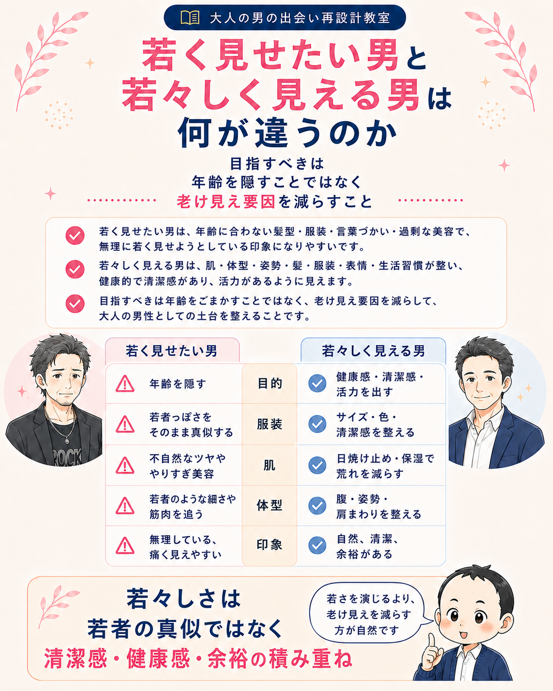
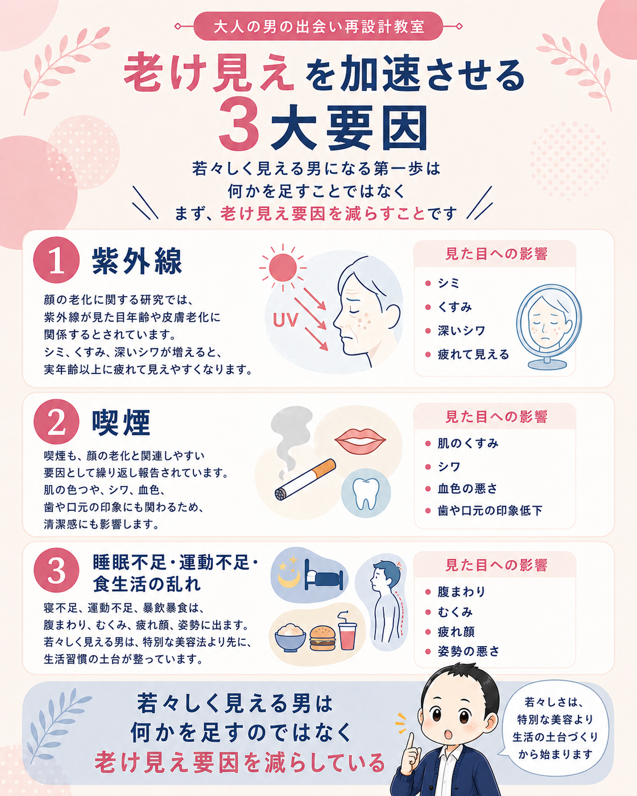
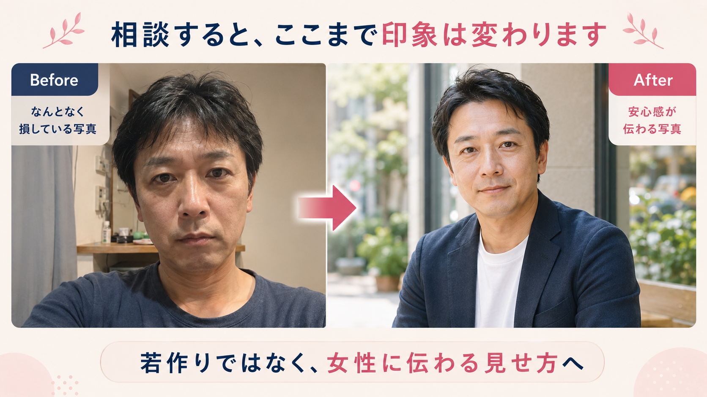

清潔感・若見え
若作りではなく若々しく見える男になる方法
40代・50代男性が目指すべきなのは、20代に見せることではありません。大切なのは、老け見え要因を減らし、健康感・清潔感・活力が伝わる状態を作ることです。この記事では、肌・体型・髪眉ヒゲ・服装・生活習慣を、研究や実践の両面から整理します。


導入｜若く見せようとするほど、老けて見えることがある
先生、マッチングアプリだと年齢で不利に感じます。
少しでも若く見せた方がいいと思うんですが、若作りに見えるのも怖いんですよね。
そこは大事な感覚です。40代・50代男性が目指すべきなのは、20代に見せることではありません。
若く見せようとするより、老けて見える原因を減らす方が、自然で説得力があります。
先生
 さくら
さくら
女性が見ているのは、実年齢より何歳若く見えるかだけではありません。
清潔感があるか、疲れて見えないか、体型や服装が整っているか。そういう総合的な印象が「若々しい」に変わります。
若作りと若々しく見える男は何が違うのか

若作りとは、年齢に合わない髪型・服装・言葉づかい・過剰な美容で、無理に若く見せようとしている印象になることです。
一方で、若々しく見える男は、年齢を隠そうとしていません。肌、体型、姿勢、髪、服装、表情、生活習慣が整っていて、実年齢よりも健康的で、清潔で、活力があるように見えます。
つまり、目指すべきは「年齢をごまかすこと」ではありません。老け見え要因を減らして、大人の男性としての土台を整えることです。
| 項目 | 若作り | 若々しく見える |
|---|---|---|
| 目的 | 年齢を隠す | 健康感・清潔感・活力を出す |
| 服装 | 若者ブランドをそのまま着る | サイズ・色・清潔感を整える |
| 肌 | 不自然なツヤややりすぎ美容 | 日焼け止め・保湿で荒れを減らす |
| 体型 | 若者のような細さや筋肉を追う | 腹・姿勢・肩まわりを整える |
| 印象 | 痛い、無理している | 自然、清潔、余裕がある |
見た目年齢は、健康状態とも関係している
でも、見た目年齢って、結局は主観ですよね？
若く見えるかどうかは、人の好みの問題じゃないんですか。
完全に主観だけではありません。見た目年齢、つまり perceived age は、健康状態や加齢指標とも関連するとされています。
40歳以上の男女を対象にしたRotterdam Studyでは、実年齢より若く見える人ほど、骨粗しょう症、COPD、白内障などが少なく、認知機能も良い傾向が報告されています。
先生
 さくら
さくら
つまり、若々しさは表面だけの美容ではなく、生活習慣や体の状態が顔や雰囲気に出ている面もあるということですね。
参考：Rotterdam Study による perceived age と健康指標の研究
老け見えを加速させる3大要因

若々しく見える男になる第一歩は、何かを足すことではありません。まず、老け見えを加速させる要因を減らすことです。
1. 紫外線
顔の老化に関する研究では、紫外線が見た目年齢や皮膚老化に関係するとされています。シミ、くすみ、深いシワが増えると、実年齢以上に疲れて見えやすくなります。
2. 喫煙
喫煙も、顔の老化と関連しやすい要因として繰り返し報告されています。肌の色つや、シワ、血色、歯や口元の印象にも関わるため、清潔感にも影響します。
3. 睡眠不足・運動不足・食生活の乱れ
寝不足、運動不足、暴飲暴食は、腹まわり、むくみ、疲れ顔、姿勢に出ます。若々しく見える男は、特別な美容法より先に、生活習慣の土台が整っています。
若々しく見える肌は、攻めすぎた肌ではなく荒れていない肌
男が日焼け止めとかスキンケアって、少し若作りっぽく見えませんか？
若作りではありません。日焼け止めは、肌を白くするためというより、シミ・くすみ・深いシワを増やさないための老け見え予防です。
オーストラリアのランダム化比較試験では、毎日の日焼け止め使用群は4.5年後に皮膚老化の増加が検出されず、必要時だけ使う群より皮膚老化が少なかったと報告されています。
先生
さくら
40代・50代男性が目指す肌は、女性のような美肌ではありません。
乾燥していない、赤みが強くない、脂ぎっていない、清潔に見える。まずはそれで十分です。
最低限は、洗顔、保湿、日焼け止めです。余裕があれば、レチノールやナイアシンアミドなどを慎重に取り入れるのも選択肢です。
ただし、攻めすぎて赤み・皮むけ・ニキビが出るなら逆効果です。若々しく見える肌とは、荒れていない肌です。
先生
参考：毎日の日焼け止め使用と皮膚老化に関するオーストラリアのランダム化比較試験、レチノイドと皮膚老化に関するレビュー
体型を整えると、顔つきまで変わる
若々しく見える中年男性は、必ずしも細マッチョではありません。大事なのは、腹だけ出ていないこと、背中が丸まりすぎていないこと、肩まわりに少し厚みがあることです。
2023年のScientific Reportsの研究では、16週間の介入で、有酸素運動と筋トレの両方が皮膚弾力や真皮構造を改善し、筋トレでは真皮厚の改善も見られたと報告されています。対象は中年日本人女性ですが、運動が皮膚老化にも影響し得るという根拠として参考になります。
40代・50代男性は、腹だけ落とそうとするより、肩・胸・背中・尻・脚を鍛えてシルエットを整える方が、見た目の変化が出やすいです。
- 週2〜3回、筋トレをする
- 週2〜4回、早歩きを入れる
- 毎日、軽いストレッチで姿勢を整える
- 毎食、タンパク質を入れる
- 酒・菓子・揚げ物を減らす
参考：Scientific Reports 2023年の運動介入研究
食事は、肌より先に腹・むくみ・疲れ顔に出る
若々しく見える食事とは、特別なサプリを大量に飲むことではありません。
魚、卵、肉、大豆製品でタンパク質をとり、野菜、果物、オリーブオイル、ナッツ、発酵食品を足し、砂糖と揚げ物を減らすことです。
地中海食やポリフェノールの多い食事は、健康的な加齢と関連する研究が多く紹介されています。難しく考えすぎる必要はありません。まずは、腹まわり、顔のむくみ、疲れ顔を減らす食事に変えることです。
肌を若返らせる食事というより、体型と疲労感を整える食事。その方が、40代・50代男性には現実的です。
髪・眉・ヒゲで顔の印象はかなり変わる
肌や体型は分かるんですが、眉やヒゲもそんなに印象に関係しますか？
かなり関係します。40代・50代男性の顔は、パーツそのものよりも「ぼやけ感」で老けて見えることがあります。
顔のコントラスト、つまり目・眉・唇などのパーツと周囲の肌との明暗差は、年齢知覚の手がかりになると報告されています。
先生
さくら
眉の下の毛、長すぎる眉毛、もみあげ、鼻毛、耳毛、白髪ヒゲ。
こういう細部を放置すると、清潔感より生活感が出やすくなります。
ヒゲは似合えば武器になります。ただし、無精ヒゲ、白髪混じりの放置ヒゲ、輪郭の曖昧なヒゲは、若々しさより疲労感を強めます。
剃るか伸ばすかより、管理されているかが重要です。
先生
服装は若者風ではなく、清潔で今っぽくする
中年男性が若々しく見える服装は、派手な服ではありません。
若者と同じ服を着ることではなく、古臭さを消すことです。古いサイズ感、くたびれた素材、汚れた靴、黄ばんだ白、色あせた黒、ヨレたTシャツ。こうしたものを減らすだけで、印象はかなり変わります。
- サイズが合っている
- 色数が少ない
- 靴が汚れていない
- 襟・袖・裾がだらしなくない
- ネイビー、白、グレー、ベージュ、オリーブを使う
- 若者ブランドより、清潔感と素材感を優先する
今日からできる若々しさチェックリスト
若々しく見える男になるために、まずは次の項目を確認してみてください。
- 朝、顔・首・耳まわりに日焼け止めを塗っている
- 洗顔後に保湿して、肌の乾燥や脂ぎりを放置していない
- 週2〜3回、筋トレをしている
- 週2〜4回、早歩きなどの有酸素運動をしている
- タンパク質を毎食とっている
- 眉・鼻毛・耳毛・ヒゲを定期的に整えている
- サイズの合わない服、ヨレた服、汚れた靴を見直している
- 寝不足・暴飲暴食を当たり前にしていない
Profile Redesign

プロフィール写真の印象まで整えたい方へ
若々しく見えるために整えた肌・髪・服装・体型は、マッチングアプリのプロフィール写真にもそのまま出ます。
大人の男の出会い再設計教室では、若作りではなく、女性に伝わる見せ方へ再設計することを大切にしています。
プロフィール再設計相談を見るまとめ｜若さを演じるより、老け見えを減らそう
若々しく見える男になるために必要なのは、年齢をごまかすことではありません。
大切なのは、老けて見える原因を一つずつ減らすことです。
- 紫外線対策をする
- 肌を荒れさせない
- 体型を整える
- 髪・眉・ヒゲを放置しない
- 服のサイズと清潔感を見直す
- 睡眠・食事・運動を整える
これらは派手な若作りではありません。むしろ、大人の男としての土台を整える行為です。
40代・50代の男性が目指すべきなのは、20代に見えることではありません。実年齢よりも健康的で、清潔で、余裕があり、「この人はちゃんとしている」と伝わることです。
次に読みたい関連記事
若々しさは、写真・清潔感・プロフィール文の印象ともつながっています。あわせて整えていきましょう。